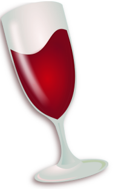
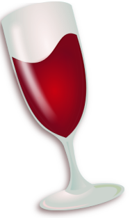

About
Contact
Catolog
Home

About
Contact
Catolog
Home
Wine is an alcoholic drink typically made from fermented grapes. Yeast consumes the sugar in the grapes and converts it to ethanol and carbon dioxide, releasing heat in the process. Different varieties of grapes and strains of yeasts are major factors in different styles of wine. These differences result from the complex interactions between the biochemical development of the grape, the reactions involved in fermentation,
the grape's growing environment (terroir), and the wine production process. Many countries enact legal appellations intended to define styles and qualities of wine. These typically restrict
the geographical origin and permitted varieties of grapes, as well as other aspects of wine production.Wines not made from grapes involve fermentation of other crops including rice wine andother fruit wines such as plum, cherry, pomegranate, currant and elderberry.